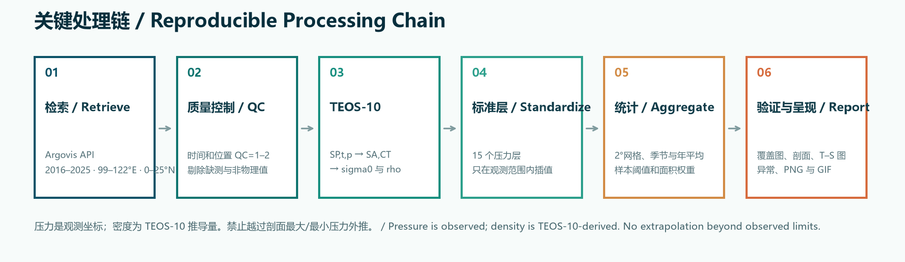
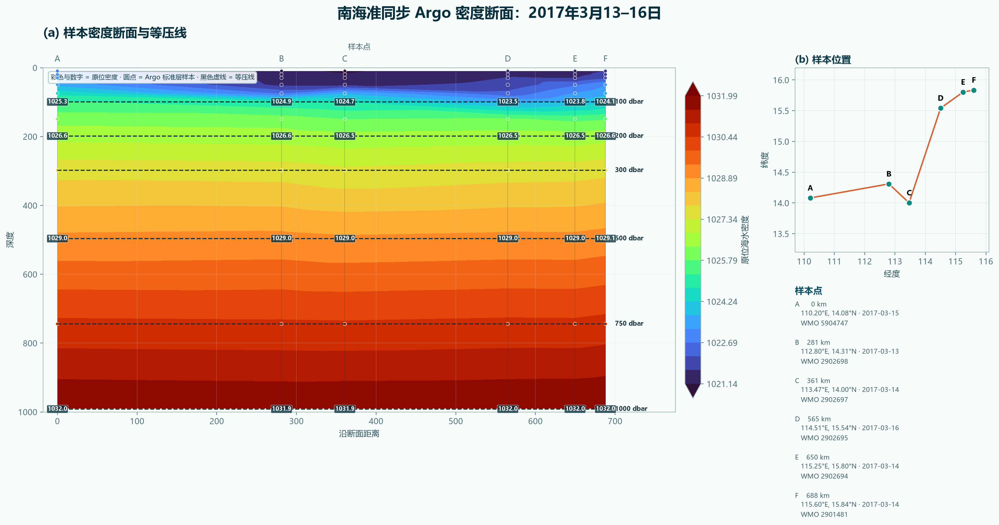
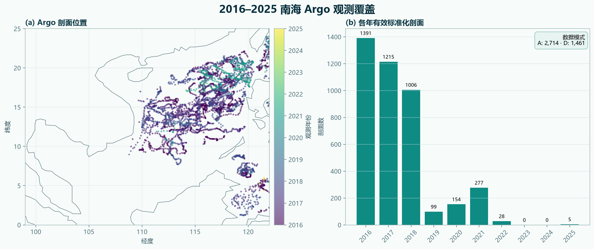
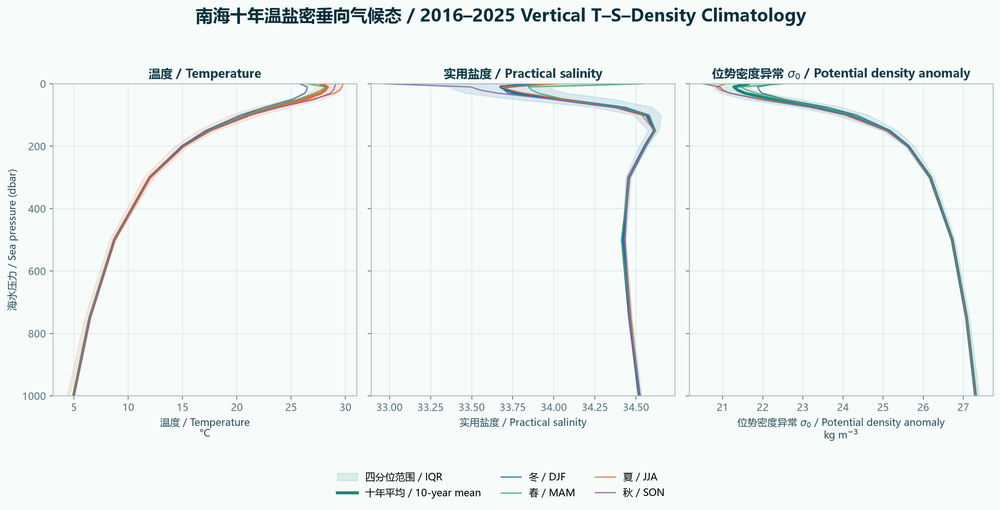
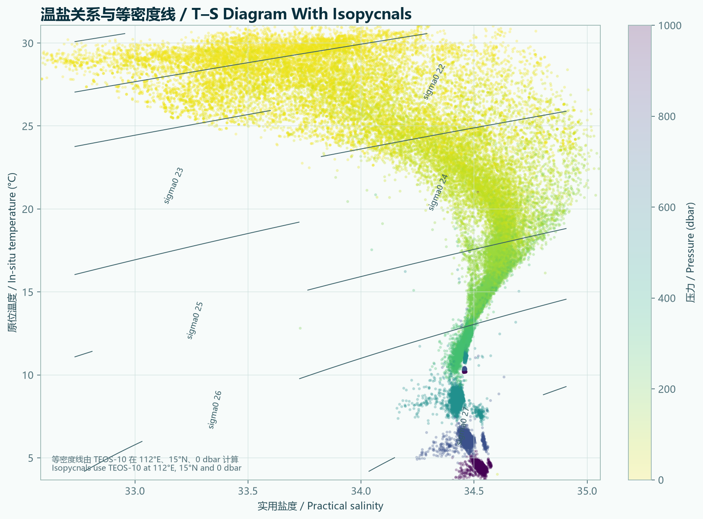
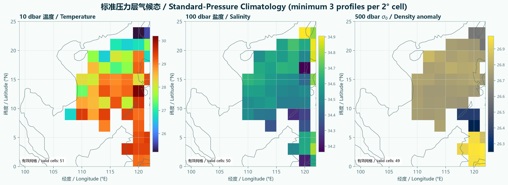
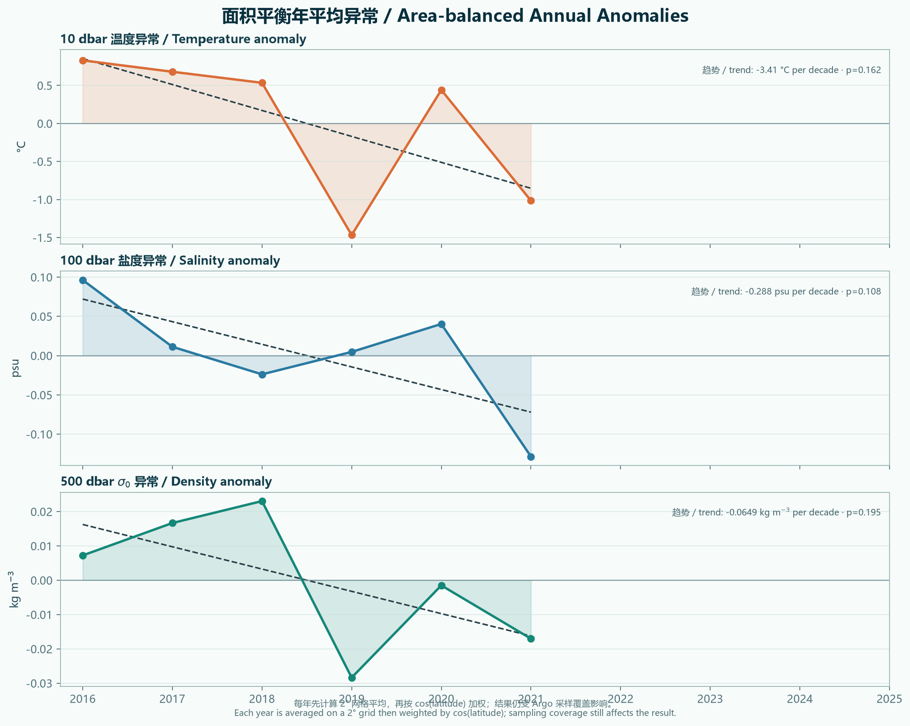
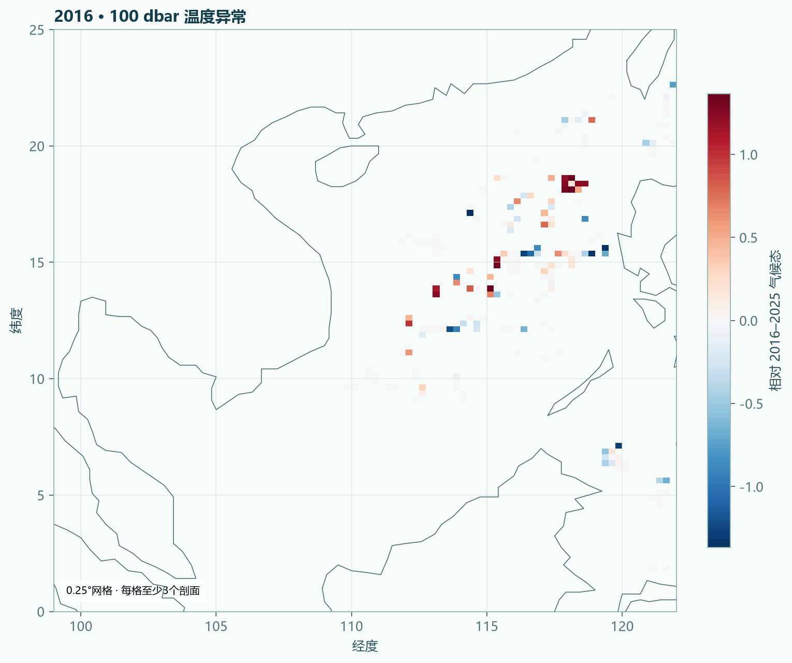

压强梯度力 / Pressure-Gradient Force
由水平压强差驱动，指向低压一侧。海表附近，海面高度差可以代表这种压力差。 / Driven by horizontal pressure differences and directed toward lower pressure. Near the surface, a sea-level difference can represent this pressure contrast.
海面高度或海水密度的水平差异产生压强梯度力；海水开始运动后，地球自转带来的科氏力逐渐改变流向。在大尺度、缓慢变化且摩擦较弱的海洋内部，两者近似平衡，流动便沿等压线前进。 / Horizontal differences in sea level or density create a pressure-gradient force. Once water moves, Earth's rotation produces a Coriolis force that turns the flow. In the large-scale, slowly varying and weakly frictional ocean interior, the two forces nearly balance and the current follows pressure contours.
交互概念模型 · 可调纬度与海面坡度 / Interactive model · Adjustable latitude and sea-surface slope“地转”描述的是一种动力平衡，不是一种固定海流名称。它常用于解释远离海岸和海底边界层的大尺度海流与中尺度涡旋。 / “Geostrophic” describes a dynamical balance, not the name of one particular current. It commonly explains large-scale currents and mesoscale eddies away from coastal and bottom boundary layers.
由水平压强差驱动，指向低压一侧。海表附近，海面高度差可以代表这种压力差。 / Driven by horizontal pressure differences and directed toward lower pressure. Near the surface, a sea-level difference can represent this pressure contrast.
只在水已运动时出现，并始终垂直于瞬时速度：北半球偏向运动方向右侧，南半球偏向左侧。 / It appears only after the water moves and is always perpendicular to instantaneous velocity: to the right of motion in the Northern Hemisphere and to the left in the Southern Hemisphere.
两力大小接近、方向相反时，跨等压线加速度很小，水流主要沿等压线或等海面高度线前进。 / When the forces are nearly equal and opposite, acceleration across pressure contours is small and the current runs mainly along isobars or sea-surface-height contours.
下图设定西侧海面高、东侧海面低，因此压强梯度力指向东。改变纬度和坡度，观察流向、科氏参数和估算地转流速。 / The sea surface is higher in the west and lower in the east, so the pressure-gradient force points east. Change latitude and slope to see the flow direction, Coriolis parameter and estimated geostrophic speed.
海面高度差产生水平压强差；静止水团尚无科氏力。 / A sea-level difference creates a horizontal pressure contrast; a stationary parcel has no Coriolis force yet.
动画说明 / Model note：为了清楚显示“建立平衡”的过程，动画把波动和弱耗散合并为平滑过渡。严格无摩擦、恒定压强梯度下，从静止释放的水团会围绕地转速度产生惯性振荡；真实海洋可通过重力波调整、摩擦和混合接近地转状态。 / To show the approach to balance clearly, the animation combines wave adjustment and weak damping into a smooth transition. In a strictly inviscid fluid under a constant pressure gradient, a parcel released from rest undergoes inertial oscillations around the geostrophic velocity; gravity-wave adjustment, friction and mixing help the real ocean approach a near-geostrophic state.
忽略局地加速度、平流加速度和摩擦后，水平动量方程留下压强梯度力与科氏力。 / Neglecting local acceleration, advective acceleration and friction leaves the pressure-gradient and Coriolis terms in the horizontal momentum equation.
其中 f = 2Ωsinφ，η 为海面高度。海面坡度越大，压强梯度越强；在相同坡度下，|f| 越小，公式给出的地转速度越大，但接近赤道时该近似失效。 / Here f = 2Ωsinφ and η is sea-surface height. A steeper surface means a stronger pressure gradient. For the same slope, smaller |f| gives a larger geostrophic speed, but the approximation fails near the equator.
面向水流下游，较高海面或较高压力位于右手侧。 / Looking downstream, higher sea level or pressure is on your right.
科氏偏转方向反转，因此同一海面坡度会给出相反的沿等高线流向。 / The Coriolis deflection reverses, so the same sea-level slope produces the opposite along-contour flow.
水平动量方程包含局地加速度、平流加速度、科氏力、压强梯度力和摩擦。当地转罗斯贝数 Ro = U/(fL) ≪ 1、变化缓慢且摩擦较弱时，加速度与摩擦相对较小，留下科氏项与水平压强梯度项。 / The horizontal momentum equation contains local and advective acceleration, Coriolis, pressure-gradient and friction terms. When Ro = U/(fL) ≪ 1, evolution is slow and friction is weak, Coriolis and horizontal pressure gradient dominate.
静力近似下，海面起伏 η 对应水平压力差；对 η 求水平梯度即可得到表层地转速度的两个分量。卫星高度计提供的是这条计算链所需的核心观测量。 / Under hydrostatic balance, sea-surface displacement η represents a horizontal pressure difference. Its gradient gives the two surface geostrophic-velocity components, making altimetric sea-surface height the key observed quantity.
密度的水平梯度通过热成风关系约束地转流的垂向切变：∂ug/∂z = −(g/fρ0) k̂ × ∇hρ。SST 只有在温度主导密度且盐度效应较小时才是密度锋面的近似线索。 / Horizontal density gradients constrain vertical geostrophic shear through thermal wind. SST is only an approximate density-front indicator when temperature dominates and salinity effects are small.
本专题分析 2016–2025 年、99–122°E、0–25°N 的 Argo 物理剖面，压力范围为 0–2000 dbar。数据由 Argovis 接口读取，并用 Argo GDAC 全球剖面索引独立核对；温度、盐度和压力经过质量控制后，采用 TEOS-10 推导绝对盐度、保守温度、位势密度异常与原位密度。 / This study analyzes Argo physical profiles from 2016–2025 over 99–122°E, 0–25°N and 0–2000 dbar. Profiles are retrieved through Argovis and independently checked against the Argo GDAC global profile index. Quality-controlled temperature, salinity and pressure are converted with TEOS-10 to Absolute Salinity, Conservative Temperature, potential-density anomaly and in-situ density.
实用盐度、原位温度、海水压力及位置。压力是观测坐标，不等同于几何深度。 / Practical Salinity, in-situ temperature, sea pressure and position. Pressure is the observed coordinate and is not identical to geometric depth.
由 TEOS-10 得到绝对盐度 SA 和保守温度 CT。 / TEOS-10 converts observations to Absolute Salinity SA and Conservative Temperature CT.
σ0 消除压力压缩效应，ρ 保留观测压力下的压缩效应；两者都是推导量。 / σ0 removes pressure compression while ρ retains compression at the observed pressure; both are derived variables.

每一步都保留清晰的阈值：时间与位置 QC=1–2；压力、温度和盐度的物理范围筛选；至少 5 个有效观测层且压力跨度不少于 20 dbar；只在剖面自身观测范围内插值。 / Every step uses explicit thresholds: time and position QC flags 1–2; physical-range screening of pressure, temperature and salinity; at least five valid levels spanning 20 dbar; and interpolation only within each profile's observed limits.
选择 2016–2025、99–122°E、0–25°N，通过 Argovis 分月读取 Argo 物理剖面，并用 GDAC 索引逐年核对。 / Select the study window, retrieve monthly physical profiles through Argovis and cross-check yearly counts against the GDAC index.
保留时间与位置 QC=1–2，移除缺测及非物理值；每条剖面至少含 5 个有效层。 / Retain time and position QC flags 1–2, remove missing and nonphysical values, and require at least five valid levels.
由 SP、t、p 与经纬度计算 SA、CT、σ0 和原位密度 ρ。 / Compute SA, CT, σ0 and in-situ density ρ from SP, t, p and position.
线性插值到 0–2000 dbar 的 15 个标准层，禁止越过原始剖面上下界外推。 / Interpolate to 15 standard levels over 0–2000 dbar without extrapolating beyond the observed profile.
在 0.25° 网格中每格至少保留 3 条剖面，计算垂向、季节、空间与年度统计。 / Require at least three profiles per 0.25° cell and form vertical, seasonal, spatial and annual summaries.
年度均值按 cos(latitude) 加权；不足 8 个网格则记为缺测；仅在有效年份足够时报告趋势斜率与 p 值。 / Weight annual cell means by cos(latitude), mark years with fewer than eight cells missing, and report a slope and p value only when enough valid years remain.
查看 Python 分析脚本 / View analysis script下载 JSON 结果 / Download JSON results下载年度样本 CSV / Download yearly counts

A–F 是 2017 年 3 月 13–16 日六个平台的准同步深水剖面。横轴为沿样本折线累计的大圆距离，纵轴为由 TEOS-10 压力换算得到的正深度；圆点是实际标准压力层，彩色背景和圆点旁数字是原位密度，黑色虚线才是 100–1000 dbar 等压线。A 点在 100 dbar 的密度为 1025.3 kg m−3，D 点为 1023.5 kg m−3，说明同一等压面上存在明显的水平密度差。等压线接近水平符合静水关系，轻微弯曲来自纬度对压力—深度换算的影响。 / A–F are quasi-synoptic deep profiles from six platforms observed during 13–16 March 2017. The x-axis is cumulative great-circle distance along the station path, and the y-axis is positive depth converted from pressure with TEOS-10. Circles are sampled standard levels; color and printed numbers are in-situ density; only the dashed black curves are the 100–1000 dbar isobars. At 100 dbar, density is 1025.3 kg m−3 at A and 1023.5 kg m−3 at D, revealing a horizontal density contrast on the same pressure surface. Nearly horizontal isobars are expected under hydrostatic balance; their slight curvature comes from the latitude dependence of the pressure-to-depth conversion.

剖面主要分布在南海中北部和东部深水区；2016–2018 年样本最多，2019 年以后明显减少。该覆盖差异直接约束年度异常的可比性。 / Profiles cluster in the central, northern and eastern deep basin. Sampling is strongest in 2016–2018 and declines sharply afterward, directly limiting year-to-year comparability.

平均温度由 10 dbar 的 28.33°C 降至 200 dbar 的 15.03°C 和 1000 dbar 的 4.96°C；σ0 同期由 21.28 增至 25.63 和 27.30 kg m−3。季节差异主要集中在上层约 100–200 dbar，深层曲线逐渐汇合。 / Mean temperature falls from 28.33°C at 10 dbar to 15.03°C at 200 dbar and 4.96°C at 1000 dbar, while σ0 rises from 21.28 to 25.63 and 27.30 kg m−3. Seasonal differences are concentrated in roughly the upper 100–200 dbar and diminish at depth.

暖而相对低盐的上层水与冷而高密度的深层水沿连续 T–S 分支连接。等密度线由 TEOS-10 在代表位置 112°E、15°N、0 dbar 计算，用于解释温盐共同控制密度。 / Warm, relatively fresh upper water connects continuously to colder, denser deep water. TEOS-10 isopycnals at 112°E, 15°N and 0 dbar show how temperature and salinity jointly control density.

三个压力层采用相同的 0.25° 网格和每格至少 3 条剖面的阈值。空白代表样本不足，而不是变量为零。不同层的有效网格数不同，说明分析必须同时检查深度覆盖。 / All panels use the same 0.25° grid and a minimum of three profiles per cell. Blank cells indicate insufficient observations rather than zero values. Different valid-cell counts also show why depth coverage must be checked.

10 dbar 温度、100 dbar 盐度与 500 dbar σ0 的年度异常仅在至少 8 个有效 0.25° 网格时计算。重算后，三个趋势的 p 值分别为 0.205、0.198 和 0.816，均未达到常用显著性标准；温度序列的 2019 年也因不足 8 格而留白。 / Annual anomalies for 10 dbar temperature, 100 dbar salinity and 500 dbar σ0 require at least eight valid 0.25° cells. Recalculated trend p values are 0.205, 0.198 and 0.816, respectively; none reaches a conventional significance threshold. The 2019 temperature value is also blank because fewer than eight cells qualify.

动画显示每个 0.25° 网格相对 2016–2025 合成气候态的异常，每格至少需要 3 条剖面。2023–2024 年无有效观测，2025 年样本不足，空白帧忠实表达资料缺口。 / The animation shows anomalies in each 0.25° cell relative to the 2016–2025 composite climatology, requiring at least three profiles per cell. Blank 2023–2024 frames and the sparse 2025 frame faithfully represent the data gap.
数据与方法来源 / Data and method sources: Argo GDAC · Argo profile files and QC · TEOS-10 GSW · Argo DOI: 10.17882/42182
卫星高度计测量海面高度异常，海面高度梯度可用于计算地转流分量。下面以北半球为例；南半球的旋转方向相反。 / Satellite altimeters measure sea-level anomalies, whose horizontal gradients can be used to calculate geostrophic-current components. The examples below are for the Northern Hemisphere; rotation reverses in the Southern Hemisphere.
压强梯度力由中心向外；科氏力指向中心，二者维持近似平衡。海面高常与暖性反气旋涡相关，但“高海面 = 暖涡”仍需结合密度结构判断。 / The pressure-gradient force points outward and the Coriolis force inward. A sea-level high is often associated with a warm anticyclonic eddy, although density structure is needed before equating every high with a warm eddy.
压强梯度力指向中心；要与之平衡，科氏力指向外侧，形成气旋式环流。 / The pressure-gradient force points inward; balancing it requires an outward Coriolis force, producing cyclonic circulation.
测量海面高度或海面高度异常，对水平梯度求导后估算表层地转流。全球产品在赤道附近常改用 β 平面等处理。 / Measure sea-surface height or anomaly and use its horizontal gradients to estimate surface geostrophic velocity. Global products use special treatments such as a beta-plane approximation near the equator.
CTD、Argo 等给出密度随深度的结构，通过动力高度或热成风关系求相对地转流；通常需要一个参考速度或参考层。 / CTD and Argo profiles provide density structure. Dynamic height or thermal-wind relations yield relative geostrophic velocity, usually requiring a reference velocity or level.
ADCP、漂流浮标和锚系直接或准直接测流，可检验推算结果；实测流还包含潮流、惯性流、Ekman 流等非地转成分。 / ADCPs, drifters and moorings measure currents directly or nearly directly. Their velocity includes tides, inertial motion, Ekman flow and other ageostrophic components as well.
先判断压强梯度力向东，再让科氏力与它反向平衡。 / First identify the eastward pressure-gradient force, then find the current direction that gives an opposing Coriolis force.
大洋表层的许多大海流都近似处于地转平衡：海面坡度和密度结构给出压强梯度力，科氏力与之相抵，流动沿等压线前进。下面这幅示意图把前五节的概念放到全球尺度，并用四个课堂问题逐一读图。 / Many large surface currents are close to geostrophic balance: sea-surface slope and density structure set the pressure-gradient force, the Coriolis force opposes it, and the flow runs along pressure contours. The schematic below places the previous concepts on the global ocean and reads the map through four classroom questions.
读图 / How to read：琥珀色为暖流，多位于大洋西边界；蓝色为寒流，多位于东边界；绿色箭头与圆环标出地转流方向及五个副热带环流的旋转方向；赤道阴影带内 f≈0，地转关系不适用，流系以风驱动为主（灰色虚线）。 / Amber marks warm currents, mostly on western boundaries; blue marks cold currents, mostly on eastern boundaries; mint arrows show geostrophic-flow direction and the rotation of the five subtropical gyres; inside the shaded equatorial band f≈0, where the geostrophic relation fails and currents are mainly wind-driven (grey dashed).
风把表层海水向副热带辐聚，堆出中央高、四周低的海面"山丘"：压强梯度力向外，科氏力向内，二者近似平衡。北半球流动保持高压在右，于是沿"山丘"顺时针转；南半球偏转方向相反，环流随之逆转。 / Winds pile surface water into a subtropical sea-level dome: the outward pressure-gradient force balances the inward Coriolis force. Northern-Hemisphere flow keeps the high on its right and circulates clockwise; reversed deflection in the south reverses the gyre.
β 效应与风应力旋度把回流"挤"到大洋西侧（西向强化）：西边界海面坡度更陡，由 ug ∝ 坡度/f，地转流更快并集中在窄带内；东侧坡度平缓，流动宽而弱。注意分工：地转关系解释"坡度陡则流快"，西向强化本身来自风应力旋度与 β 效应。 / The β effect and wind-stress curl squeeze the return flow against the western boundary (westward intensification): a steeper sea-surface slope there means, via ug ∝ slope/f, a swifter geostrophic current confined to a narrow band, while gentle eastern slopes give broad, weak flows. Geostrophy explains the slope–speed link; the intensification itself comes from wind curl and β.
南半球高纬没有陆地阻挡，南极洲以北的海面坡度带连续贯通，地转平衡让流动沿闭合等压线绕行一整圈；强西风持续输入动量，使它成为全球体积输送最大的海流。其他纬带则被大陆分割成一个个环流圈。 / With no land barrier at high southern latitudes, the sea-surface slope band north of Antarctica is continuous, so geostrophic flow follows closed pressure contours all the way around the globe. Persistent westerlies keep feeding momentum, making the ACC the largest current by volume transport; other latitude bands are broken into separate gyres by continents.
ug = (g/f)·坡度 中的 f = 2Ωsinφ 在赤道趋于零，公式发散，近似本身失效。赤道流系主要由信风直接驱动，并伴有赤道波导过程，属于非地转流动；高度计产品在赤道附近必须改用 β 平面等特殊处理。 / In ug = (g/f)·slope, f = 2Ωsinφ vanishes at the equator, so the formula blows up and the balance itself fails. Equatorial currents are driven mainly by the trade winds and equatorial wave dynamics — they are ageostrophic. Altimetry products switch to special treatments such as the β-plane approximation near the equator.
页面的方向判断、公式、Argo 质量控制和 TEOS-10 换算依据 Argo、TEOS-10、NOAA、AVISO 与公开课程资料交叉核验。年度曲线保留采样缺口并报告显著性，不能作单因子气候归因。 / Directions, equations, Argo quality control and TEOS-10 conversions were cross-checked against Argo, TEOS-10, NOAA, AVISO and open-course sources. Annual curves preserve sampling gaps and report significance; they do not support single-cause climate attribution.